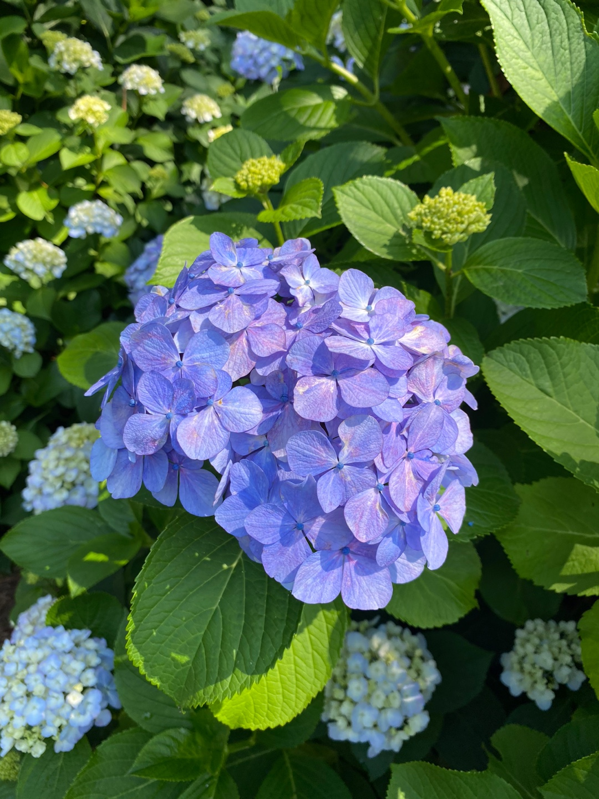
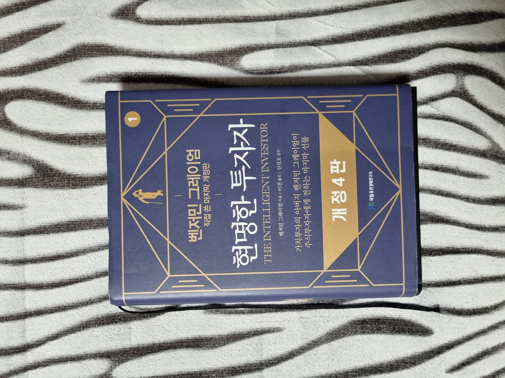

Youtube
#자연
#좋아
#시원
Test Video (시원함 주의)(동해물과 백두산이 마르고 닳도록 하느님이 보우하사 우리나라 만세 무궁화 삼천리 화려강산 대한사람 대한으로 길이 보전하세)
조회수 1,000,000회
∙ 최초공개: 2022.8.22.
1k
0
Share
Save
Report

피곤한아이
구독자 100만명
subscribe
Up next
책 리뷰 : 복잡계 세상에서의 투자
피곤한아이
조회수 15만회
책 리뷰 : 전설로 떠나는 월가의 영웅
피곤한아이
조회수 32만회

책 리뷰 : 현명한 투자자
피곤한아이
조회수 11만회
 책 리뷰 : 복잡계 세상에서의 투자피곤한아이 조회수 15만회
책 리뷰 : 복잡계 세상에서의 투자피곤한아이 조회수 15만회 책 리뷰 : 전설로 떠나는 월가의 영웅피곤한아이 조회수 32만회
책 리뷰 : 전설로 떠나는 월가의 영웅피곤한아이 조회수 32만회